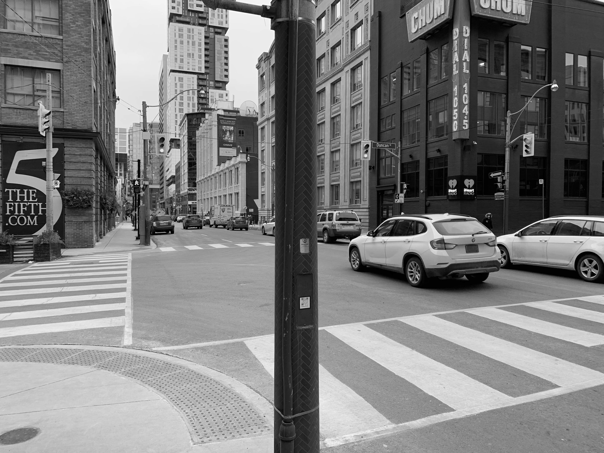

Intro module, first panel
Second text on first panel
Intro module, second panel
Second text on second panel
First module, first panel
Second text on first panel
First module, second panel
Second text on second panel
First module, third panel
Second text on third panel
Second module, first panel
Second text on first panel
Second module, second panel
Second text on second panel
Third module, first panel
Second text on first panel
Third module, second panel
Second text on second panel